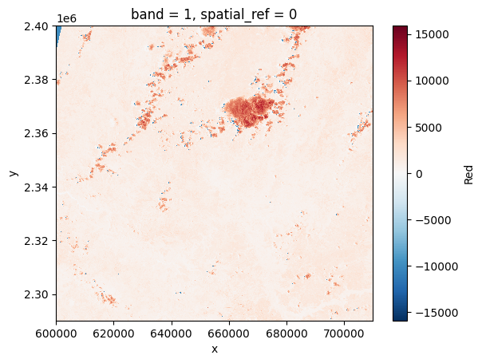
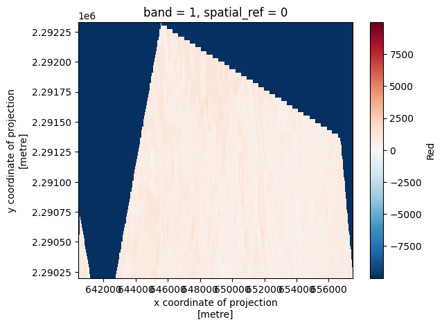

%pip uninstall -y earthaccess
%pip install git+https://github.com/nsidc/earthaccess.git@exploreearthaccess a NASA Earthdata API Client 🌍 in Python
Overview
TL;DR: earthaccess is uses NASA APIs to search, preview and access NASA datasets on-prem and in the cloud with 4 lines of Python.
There are many ways to access NASA datasets, we can use the NASA’s Earthdata search portal. We can use DAAC specific websites or tools. We could even use data.gov! These web portals are great but… they are not designed for programmatic access and reproducible workflows. This is extremely important in the age of the cloud and reproducible open science. In this context, earthaccess aims to be a simple library that can deal with the important parts of the metadata so we can access or download data without having to worry if a given dataset is on-prem or in the cloud.
The core function of auth is to deal with cloud credentials and remote file sessions (fsspec or requests). essentially, anything that requires you to log in to Earthdata. Most of this will happen behind-the-scenes for you once you have been authenticated.
NASA EDL and the Auth class
- Step 1. We need to open an account with NASA Eardtada, this credentials will allow us to access NASA datasets.
Once we have our account we can use it with earthaccess
import earthaccess
auth = earthaccess.login()Searching for data using a region of interest
path = "bosque_primavera.json"
# path = "bosque_primavera.kml"
# path = "bosque_primavera.shp"
geom = earthaccess.load_geometry(path)Search and Access with earthaccess
earthaccess uses NASA’s search API to search for data from the different Distributed Archive Centers, the data can be hosted by the DAACs or in AWS, with earthaccess we don’t need to think about this because it will handle the authentication for us. For reproducible workflows we just need to use the dataset (or collection as NASA calls them) concept_id.
The concept_id of a collection can be found with earthaccess or using NASA Earthdata search portal.
results = earthaccess.search_data(
concept_id = ["C2613553260-NSIDC_CPRD", "C2237824918-ORNL_CLOUD", "C1908348134-LPDAAC_ECS", "C2021957657-LPCLOUD", "C2631841556-LPCLOUD"],
temporal = ("2013", "2023"),
# unpacking the dict
**geom
)Granules found: 1905m = earthaccess.explore(results, roi=geom)
mAccessing the data with .download() and .open()
Option 1. I’m not in AWS
Option 2. I’m in AWS us-west-2 ☁️
Analysis in place with S3 direct access
Same API, just a different origin
%%time
results = earthaccess.search_data(
concept_id = ["C2021957657-LPCLOUD"],
temporal = ("2013", "2023"),
# unpacking the dict
**geom
)
# files = earthaccess.open()Granules found: 472
CPU times: user 212 ms, sys: 19.1 ms, total: 231 ms
Wall time: 3.62 s%%time
files = earthaccess.open(results[0:4])Opening 4 granules, approx size: 0.75 GB
CPU times: user 591 ms, sys: 63.5 ms, total: 654 ms
Wall time: 7.91 simport rioxarray
ds = rioxarray.open_rasterio(files[0])
ds<xarray.DataArray (band: 1, y: 3660, x: 3660)>
[13395600 values with dtype=int16]
Coordinates:
* band (band) int64 1
* x (x) float64 6e+05 6e+05 6.001e+05 ... 7.098e+05 7.098e+05
* y (y) float64 2.4e+06 2.4e+06 2.4e+06 ... 2.29e+06 2.29e+06
spatial_ref int64 0
Attributes: (12/36)
ACCODE: Lasrc; Lasrc
add_offset: 0.0
AREA_OR_POINT: Area
arop_ave_xshift(meters): 0, 0
arop_ave_yshift(meters): 0, 0
arop_ncp: 0, 0
... ...
TIRS_SSM_MODEL: ACTUAL; ACTUAL
TIRS_SSM_POSITION_STATUS: NOMINAL; NOMINAL
ULX: 600000
ULY: 2400000
USGS_SOFTWARE: LPGS_15.3.1c
_FillValue: -9999ds.clip()<matplotlib.collections.QuadMesh at 0x7f53d7a7a5e0>
geometries = [
{
'type': 'Polygon',
'coordinates':[geom["polygon"]]
}
]
clipped = ds.rio.clip(geometries, drop=True, crs=4326)
clipped<xarray.DataArray (band: 1, y: 71, x: 570)>
array([[[-9999, -9999, -9999, ..., -9999, -9999, -9999],
[-9999, -9999, -9999, ..., -9999, -9999, -9999],
[-9999, -9999, -9999, ..., -9999, -9999, -9999],
...,
[-9999, 796, 796, ..., 1016, 792, -9999],
[ 719, 794, 815, ..., 861, 760, 942],
[ 617, 710, 785, ..., 798, 842, 1165]]], dtype=int16)
Coordinates:
* band (band) int64 1
* x (x) float64 6.404e+05 6.405e+05 ... 6.575e+05 6.575e+05
* y (y) float64 2.292e+06 2.292e+06 2.292e+06 ... 2.29e+06 2.29e+06
spatial_ref int64 0
Attributes: (12/36)
ACCODE: Lasrc; Lasrc
add_offset: 0.0
AREA_OR_POINT: Area
arop_ave_xshift(meters): 0, 0
arop_ave_yshift(meters): 0, 0
arop_ncp: 0, 0
... ...
TIRS_SSM_MODEL: ACTUAL; ACTUAL
TIRS_SSM_POSITION_STATUS: NOMINAL; NOMINAL
ULX: 600000
ULY: 2400000
USGS_SOFTWARE: LPGS_15.3.1c
_FillValue: -9999clipped.plot()<matplotlib.collections.QuadMesh at 0x7f5395c88580>
clipped.hvplot(x="x", y="y", crs=xds.rio.estimate_utm_crs()) * mapNext Step: Subsetting in the Cloud
%%time
# accessing the data on prem means downloading it if we are in a local environment or "uploading them" if we are in the cloud.
order = earthaccess.subset(results, roi=polygon)